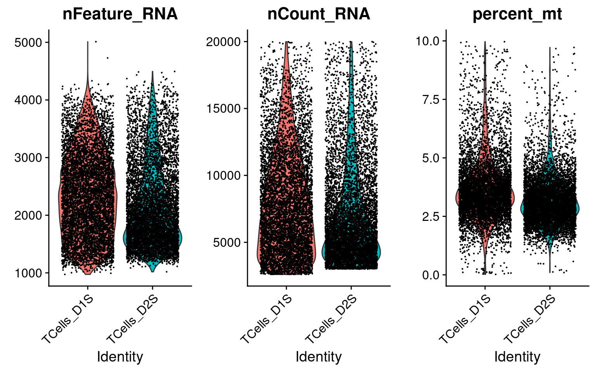

1 Data Settings
Source:
Genome-wide CRISPR Screens in Primary Human T Cells Reveal Key Regulators of Immune Function, GEO accession: GSE119450.
Perturbations:
CRISPR knock-out of 20 genes (2 gRNAs per gene) + 8 non-targeting gRNAs. Guide conditions were defined on the target gene level; target genes were either found to regulate T cell responses in the genome-wide screens, or known checkpoint genes.
Guide RNAs were introduced into T cells through a novel procedure called sgRNA lentiviral infection with Cas9 protein electroporation (SLICE).
Cells:
Primary human CD8+ T cells from two healthy donors, with T cell receptor (TCR) stimulation.
Cells from 2 donors were pooled together into 1 analysis.
2 scRNA-seq data
2.1 Preprocessing
There are 13983 cells with a single type of gRNA readout using the quality control criteria of % mitochondria gene expression < 10 and total UMI count < 2e+4.

Only genes detected in > 10% of cells were kept, resulting in 6062 genes.
Seurat “LogNormalize”: log(count per \(10^4\) + 1).
Batch effect, unique UMI count, library size, and mitochondria percentage were all corrected for.
2.2 UMAP representation of cells
2.2.1 Before correction
2.2.1.1 Batch effect
2.2.1.2 Cell cycle effect
Cells are colored by the mean expression of signature genes at the corresponding cell cycle stage:
2.2.1.3 Expression patterns of marker genes
From the reference paper: activation state (IL7R, CCR7), cell cycle (MKI67), and effector function (GZMB).
2.2.2 After correction
2.2.2.1 Cell cycle effect
Cells are colored by the mean expression of signature genes at the corresponding cell cycle stage:
2.2.2.2 Expression patterns of marker genes
From the reference paper: activation state (IL7R, CCR7), cell cycle (MKI67), and effector function (GZMB).
The expression of MKI67 coincides with cells at the mitotic stage.
3 CRISPR Perturbations

3.1 Distribution of Knock-out Perturbations

3.2 Differential gene expression t-test
Number of genes that passed FDR < 0.05 under each perturbation:| KO | ARID1A | BTLA | C10orf54 | CBLB | CD3D | CD5 | CDKN1B |
| DE_genes | 14 | 0 | 0 | 15 | 5 | 6 | 1 |
| KO | DGKA | DGKZ | HAVCR2 | LAG3 | LCP2 | MEF2D | NonTarget |
| DE_genes | 0 | 0 | 0 | 1 | 39 | 0 | 0 |
| KO | PDCD1 | RASA2 | SOCS1 | STAT6 | TCEB2 | TMEM222 | TNFRSF9 |
| DE_genes | 0 | 9 | 0 | 5 | 73 | 0 | 1 |